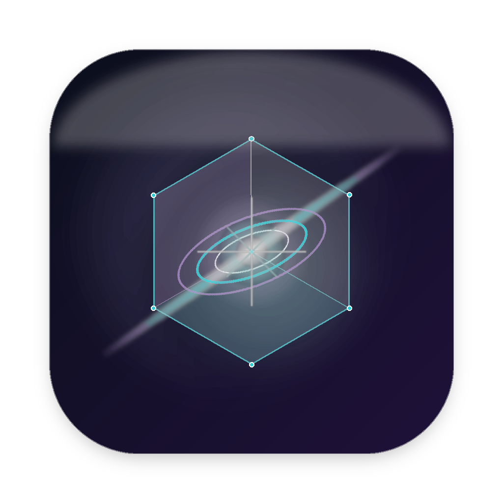
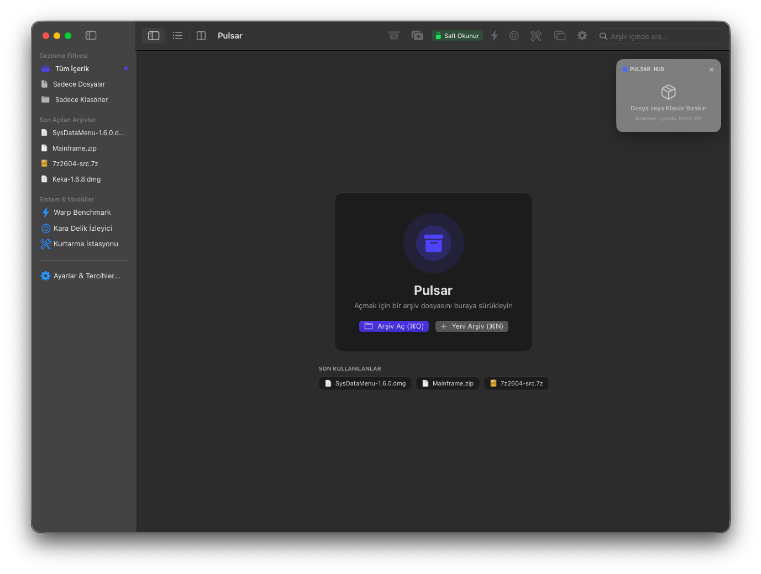

PULSAR v1.2.2 (Supernova)Evrenin en hızlı dönen nötron yıldızından ilham alan Pulsar; 7-Zip ve WinRAR motorlarını, modern Apple HIG estetiğini ve dinamik Açık/Koyu sistem temalarını tek çatı altında birleştirir.
macOS Sonoma & Sequoia standartlarında Açık ve Koyu mod, yerel Finder simgeleri ve birörnek sheet mimarisi

macOS Sonoma ve Sequoia HIG tasarım diliyle tam uyumlu yerel bileşenler
Varsayılan olarak salt okunur açılarak arşivlerin bozulması önlenir. Araç çubuğundaki kilit açıldığında arşiv içine doğrudan sürükleyip dosya ekleyebilir veya silebilirsiniz.
Ekranın istenen köşesine sabitlenebilen yarı saydam kompakt widget (⌘⇧H). Üzerine dosya bırakarak tek tıkla arka planda sıkıştırın veya çıkarın.
Mac'ten Windows kullanıcılarına arşiv gönderirken oluşan sinir bozucu .DS_Store ve __MACOSX gizli artıklarını tek tıkla otomatik filtreler.
İndirilenler klasörünüzü arka planda FSEvents ile izler; yeni gelen RAR, 7Z ve ZIP dosyalarını otomatik klasörüne açar ve tercihinize göre orijinali çöpe taşır.
Bozuk, eksik inmiş veya CRC hatalı RAR dosyalarını WinRAR dahili Recovery Record (Kurtarma Kaydı) algoritması ile tarayıp onarır.
Şifreli arşivleriniz için parolaları isterseniz tek oturumda hatırlatın, isterseniz macOS Anahtar Zinciri'ne kaydedip Touch ID ile anında açın.
Apple Silicon mimarisinin multithreaded sıkıştırma ve açma sınırlarını zorlayın
Hazır - Test başlatılmayı bekliyor
En popüler arşiv formatları ve disk imajları için tam okuma/yazma desteği
Pulsar'ın güncel versiyon bilgileri ve sürüm geçmişi